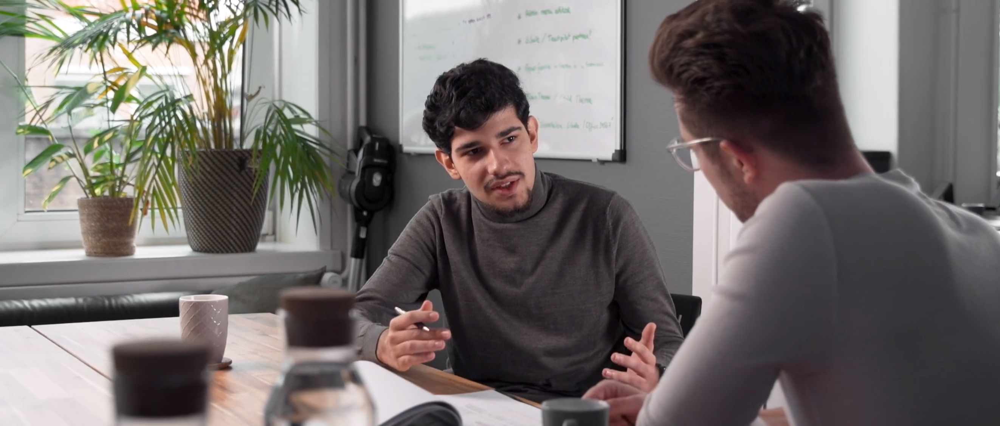

Arman Salehi
Over mij.
Ietsjes persoonlijker.

Ik ben Arman Salehi, een UX/UI Designer en (Web)developer.
Na mijn overgangsbewijs naar havo 4, heb ik gelijk voor de MBO4
opleiding Software Developer gekozen, aangezien ik al heel snel wist
waar ik mijzelf in wou verdiepen; Software developen. Mijn favoriete
gedeelte is Front-end webdesign, maar natuurlijk is mijn Back-end
kennis meer dan voldoende.
Ik heb door de jaren heen gewerkt op verschillende vlaktes die ons digitaal leven beïnvloeden. Van motion design, branding- en graphic design, naar online marketing en campagnes. Ik voelde me het meest comfortabel in het creëren en realiseren van online goederen zoals websites, apps en software. Samen met een oog voor design, werk ik graag aan ons nieuwe project.
Ik heb door de jaren heen gewerkt op verschillende vlaktes die ons digitaal leven beïnvloeden. Van motion design, branding- en graphic design, naar online marketing en campagnes. Ik voelde me het meest comfortabel in het creëren en realiseren van online goederen zoals websites, apps en software. Samen met een oog voor design, werk ik graag aan ons nieuwe project.
Mijn skills.
Front-end development |
HTML / CSS |
PHP |
Adobe XD |
Tactisch denken |
|---|
Back-end development |
Javascript |
SQL |
Adobe After Effects |
UX / UI Design |
Ook druk met.
Mijn schildpadden onderhouden |
Motion design |
Piano spelen |
Videogames spelen |
|---|
Mijn workflow.
1. De voorbereiding - In de eerste fase ga ik vooral in gesprek en
probeer ik een beeld te krijgen van het bedrijf en bespreek ik de
eisen. Er wordt vooral heen en weer gecommuniceerd zodat beide
partijen tevreden en genoeg informatie hebben om met een goed gevoel
het project voort te zetten.
2. Ontwerpen - In de tweede fase ga ik aan de slag met het visuele
gedeelte, allereerst begin ik aan een boomstructuur, zo is alles glas
helder en weten beide partijen hoe de website structureel in elkaar
zit. Vervolgens maak ik een 'Wireframe' oftewel een prototype zodat de
klant weet hoe de website er uiteindelijk uit gaat komen te zien.
Eventuele veranderingen en/of extra eisen worden in deze fase
verwerkt.
3. Realiseren - In de derde fase wordt het visuele werk omgezet in
code. Alles komt hier tot leven. Zowel de frontend- als backend
gedeelte van de website wordt compleet uitgewerkt.
4. De puntjes op de i - De website is nu zo goed als af, alles werkt,
de eisen en veranderingen zijn toegepast. Nu is het tijd dat de
website goed getest wordt op eventuele bugs, zodat deze zo snel
mogelijk opgelost worden. Alle details worden toegevoegd en verwerkt,
eventuele bugs en foutjes worden opgelost en de per-fec-te website is
nu te bezoeken door iedereen!
5. Nazorg - Hoe goed de website ook gelukt is, de nazorg is even
belangrijk! Eventuele onderhoud wordt uitgevoerd, onzekerheden en
vragen worden opgehelderd en klantcontact wordt natuurlijk behouden,
want er is natuurlijk altijd een gaatje in mijn agenda, om het over
een project te hebben, of om gewoon een babbeltje te houden. (Vooral
met een kopje thee)
 Ben je geïnteresseerd? Ik ben bereikbaar
Ben je geïnteresseerd? Ik ben bereikbaar
op
+31 (06) 43 14 64 64. Je kunt
me
ook mailen op hi@armansalehi.nl.